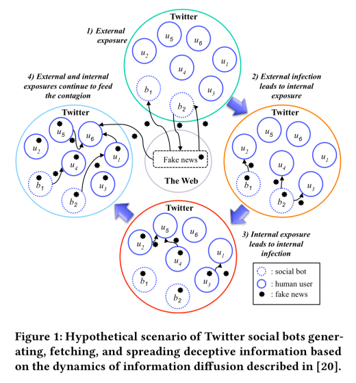

原文地址：http://blog.acolyer.org/2018/05/17/re-coding-black-mirror-part-iv
这是一览来自Re-coding Black Mirror的论文的第四部分，探讨了未来的技术场景及其对社会和伦理的影响，今天要阅读的两篇论文如下：
- 这是错误信息的年代吗？结合社交机器人和假新闻来蒙骗大众(Is this the era of misinformation yet? Combining social bots and fake news to deceive the masses Wang et al.)
- Gnirut:在一个AI统治的世界里出生的人类的问题(Gnirut: the trouble with being born human in an autonomous world Viganò and Sempreboni)
(如果你没有ACM数字图书馆访问权限，上述的论文也可以从Morning Paper网站或者www 2018议程获取)
## 这是错误信息的年代吗？
> 2016年，全世界都目击了美国总统大选期间社交媒体上的机器人散播假新闻事件...研究人员在最终投票前四周收集了Twitter数据，以估计这一现象的严重程度。结果显示有15%的账号为机器人账号，并且制造了19%的推特...当假新闻如此常见以至于事实无法到达普通人的时候会发生什么事情呢？
假新闻和恶作剧由来已久，但社交媒体的本质却火上浇油。任何用户都可以在基本不经过第三方过滤或事实检查的情况下来创建和转发内容;许多成年人通过社交媒体获取新闻;研究表明，那些接触假新闻的人倾向于相信其真实性。
我们制造令人信服的假新闻的技术发展越来越快，特别是在社交媒体帖子的关注范围内。文字内容可以由人类,或自然语言生成（在小短文社交媒体上工作尤其出色），不仅能够使用表情，还可以根据个体的风格生成对应的内容，就像之前在Be Right Back中看到的那样。
我们可以使用从零开始的语音生成来模仿给定的人的声音，也可以使用语音转换来改变源说话人的声音。在语音转换中，演员的声音被转换成像给定目标的声音。
我们可以生成看上去很真实的图片甚至是一个完全不存在的人。我们甚至可以伪造视频，例如利用素材中唇同步来实现我们想说的任何东西；将演员的面部表情实时的转换视频中的面部上面；甚至利用深度学习把视频中将面部替换掉(这里有一篇关于这项技术的好文章).
所以我们可以制作内容。信息扩散分析告诉我们如何让它传播。信息扩散通常遵循以下步骤:
- 当一个节点分享这个信息之后整个网络暴露于外部信息并被感染
- 这种外部感染引起内部暴露
- 内部暴露导致节点传递信息从而内部感染
- 在最初的感染爆发后，外部和内部接触继续助长传染
(简单来说就是某人发了一个推特，然后其他人看到并转发...:))
最终，我们可以想象将这些功能结合在一个智能的社交机器人中，给定一些目标然后用来制造和传播内容(一些强化学习可能也会在这里派上用场，使用reach作为奖励功能的关键部分)。首先，机器人选择或创建一个外部信息，然后通过传递它来创建内部暴露的初始爆发。  在第三步中，机器人的目标是让尽可能多的人接收到消息。
> 例如，社交机器人可以实现意见挖掘和情绪分析技术，以定位那些观点与散布的欺骗信息一致的用户。
人工检查永远达不到机器人产生消息的速度，因此我们需要自动化的工具来检测，ClaimBuster是这方面的一个例子。
Gnirut:在一个AI统治的世界里出生的人类的问题
一个小男孩长大后想要开飞机，然后父母不得不给他泼冷水 -- 现在只有AI才能开飞机了 -- 人类太容易犯错误了。
很多安全相关的一些工作已经交给机器人处理了，通常再给每个机器人配置几个操作员(例如5:1的操作员-机器人的比例).例如在军事行动中，自动运输，水下作业，远程手术等等。我们正在迈向一个人可以操纵一堆机器人的世界。
当然不止这些，人们正在寻找不使用人力而将原来的人工车间替换成的井然有序的机器人的全自动化系统，就像汽车流水线，甚至Amazon的仓库一样...
由于许多任务不一定需要AI参与，我们也可以更一般地讨论人工智能的比例。如果我们更进一步，开始考虑由一个或多个人工智能监控的人类呢?我们可以通过观察儿童与Alexa(AI)的互动来了解这一点。Rachel Botsman观察到她三岁的女儿与Alexa的长时间互动:
"我有些担心，看着女儿将决定权高兴的交了出去，'Alexa，我今天应该做什么', 没过多久，她就信任了AI的重大选择,第三天，Grace用唱歌的声音问道,'Alexa,我今天应该穿什么?粉红色还是闪亮的裙子?'"
为什么是多个AI为一个人类服务？而不是一个AI管理多个人类呢？
这正在慢慢发生，一开始的区别太小以至于没有人注意到，或者我们没有真正意识到，长时间的微小的变化已经引起了巨大的改变。
例如，“在一项值得称赞的保护人类安全的努力中，我们可能很快就会通过立法，规定某些工作只能由智能机器来完成。”这将延伸到人性和主观性可能会减缓反应时间或对最终结果产生负面影响的场景。(举个小例子，当一辆汽车检测到迎面而来的碰撞时，可以考虑自动制动系统)。
一种分析欧洲人权法院判决的智能算法发现，模式使它能够以79%的准确率预测案件的结果。这样的算法可以用来帮助人类决策者。
当然不止这些， 为什么不把真正的立法权交给智能机器呢?毕竟，智能机器有能力做出更好、更一致的决定。“他们”可能会通过立法，将人类无法接触到的职业列表扩展到包括司机、飞行员、医生、外科医生、会计师、律师、法官、立法者、士兵……等所有职业.
回到我们的孩子，她想成为一名飞行员，为了被允许训练和飞行，她会把自己伪装成一个人工智能吗?也许她将不得不通过Gnirut测试(想想!),其中包含了一个AI裁判和一个试图将自己伪装成人工智能的人…可悲的是,我发现相比于一个人类通过Gnirut测试，一个机器人通过图灵测试会更加简单。